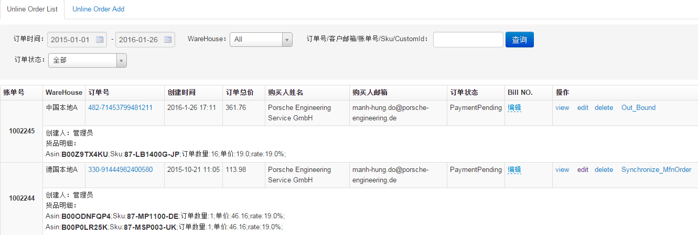
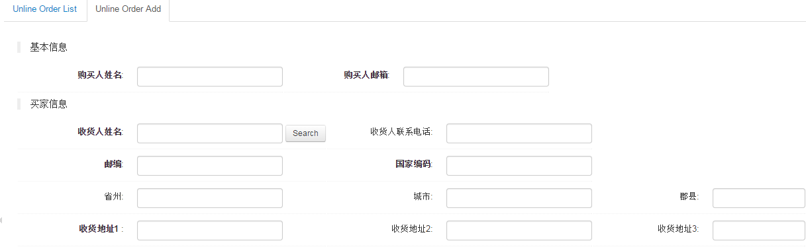

线下订单管理
线下订单管理针对顾客大批量批发产品的订单管理。
Unline Order List:

- 编辑操作权限局限于订单创建人
- 未发货的订单可以edit和delete,view查看订单详细信息
- 中国仓和美国仓点击Out_Bound出库，进入出库界面，点击create生成出库单。德国仓点击Synchronize_MfnOrder，弹出对话框确认后同步到自发货订单，自发货订单日期修改为同步日期，线下订单状态修改为Shipped。
- Bill NO.列，点击编辑输入物流单号，可以跟踪物流信息
- 点击订单号查看订单明细信息，可以选择模板生成对应语言Pdf账单，未发货订单可以点击编辑按钮修改订单信息
Unline Order Add:

新增线下订单
- 如果是老顾客，输入收货人姓名，点击Search按钮，会查询出相应的买家信息
- Supplier:选择快递类型，输入物流单号，可以跟踪物流信息